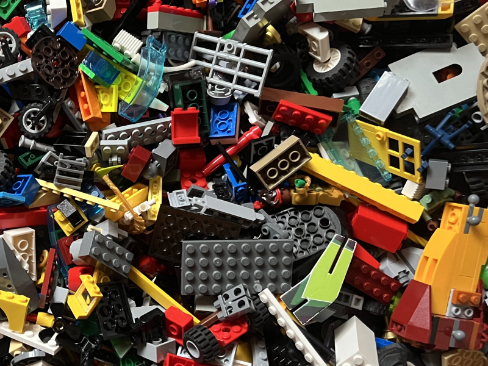
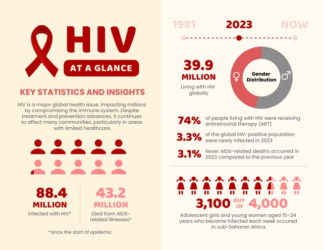

Boiled eggs?
Thermal modeling to find the perfect boiled egg

Lego database
Building a Lego database based on Rebrickable...

Lego brick investigation
Exploring Lego bricks since 1949...
Drug diffusion in tumours
Image analysis and mass transport modeling

Health data analysis
UNESCO / WHO data mining
Geographical analysis
Demo of data on map

Statistics inference
classification of data
Chaos - pendulums
Model of pendulums

Controlling chaos
Control system for double pendulum

Machine learning
Control system for double pendulum